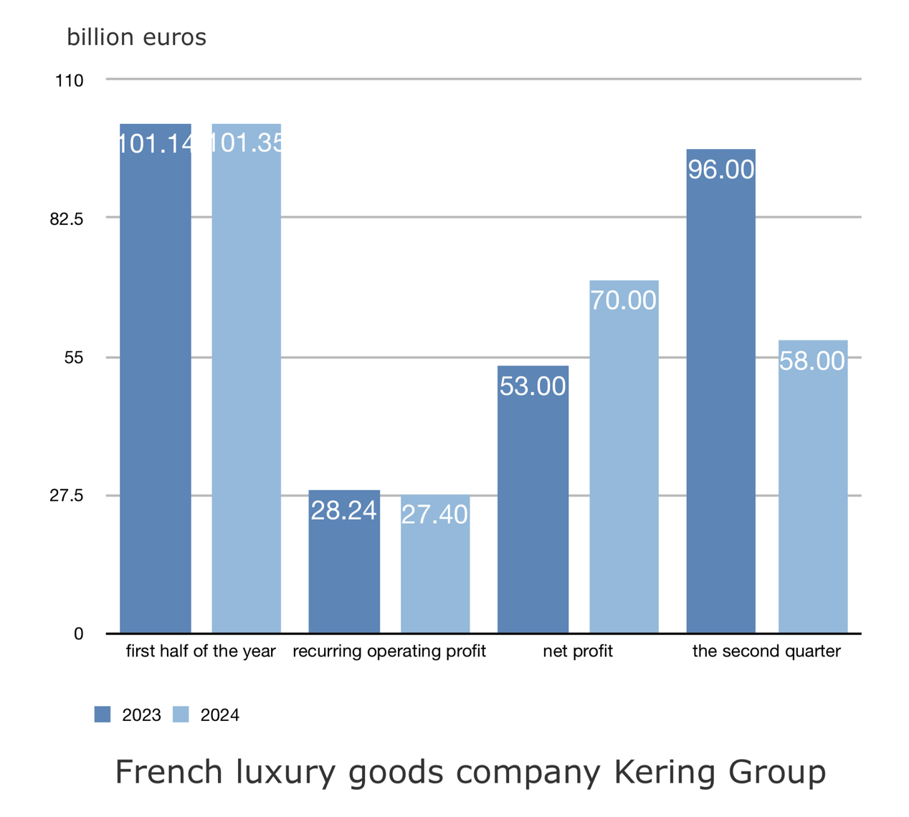
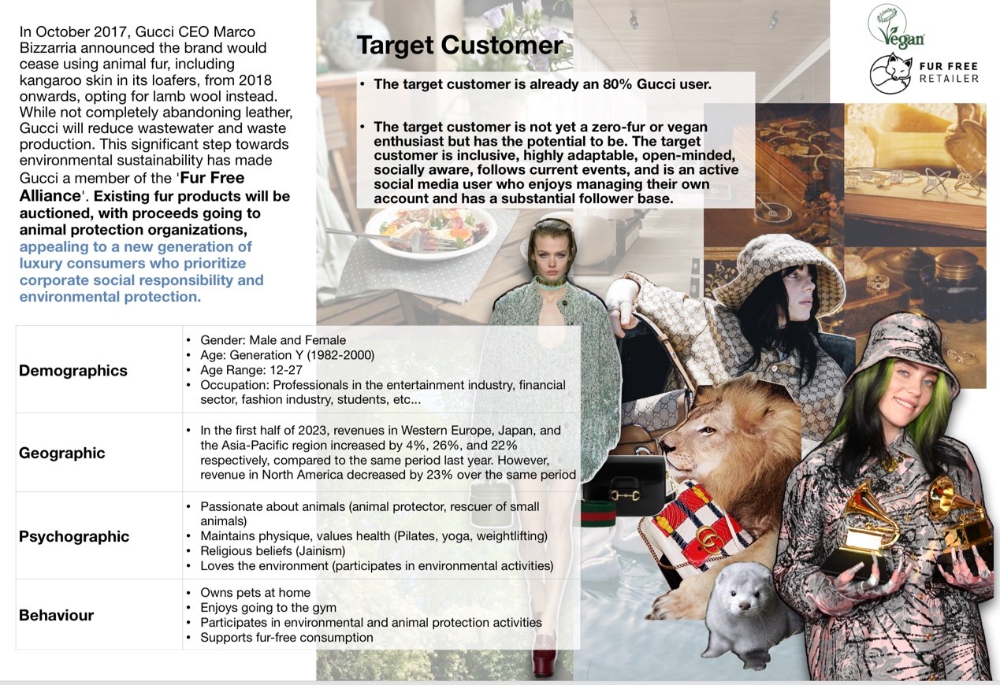
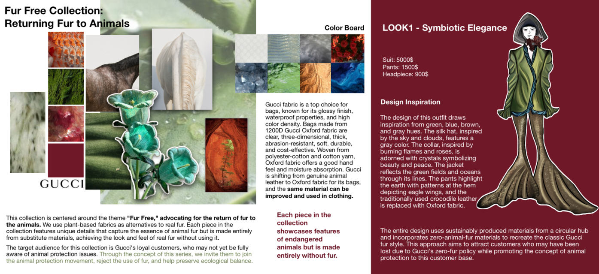
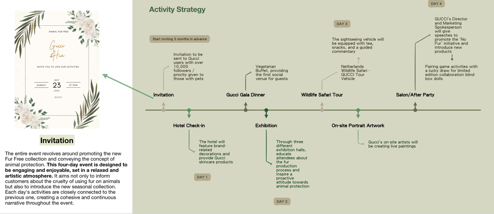

Gucci Brand Introduction
Luxury goods often overshadow the brutal slaughter of rare animals for fur, leading to the death of 619 million animals every three days and pushing species like African elephants towards extinction. Fashion marketing should promote fur-free designs as symbols of affluence. In 2018, Gucci joined the "International Anti-Fur Coalition," committing to a fur-free future. Previously, many consumers favored fur products, unaware of the cruelty behind them. Luxury brands like Louis Vuitton, Gucci, and Hermes heavily used fur in their merchandise. Now, with growing awareness of animal protection, this project's clientele aligns with animal protectors and vegetarians, embracing fur- free consumption. The goal is to eradicate animal fur, promote ecological harmony, and protect animals from fashion industry exploitation. It aims to teach the new generation that fur is unnecessary for luxury and encourages advocacy for animal protection.
Market Research
BBC: On September 12, 2024, BBC reported bearskin hats for Buckingham Palace soldiers now cost over £2,000 each. Animal activists call real fur use cruel. Queen Camilla switched to faux fur, stating tradition must evolve.
CNN: CNN reported Victoria Beckham's Paris Fashion Week show was disrupted by animal rights protesters. PETA urged her to use ethical materials like apple and mushroom leather, stating fur is not luxury and disregarding animal life is not fashion.
Making process

Brand promotion

Economic Impact:
1. Global Economic Changes: The fur industry has been significantly impacted by global economic fluctuations. Due to current economic instability and uncertainties in the luxury market, the demand for fur, as a high-priced luxury item, has decreased.
2. Legislative Restrictions: Many countries have begun to legislate against or restrict fur production and trade. For instance, the UK, France, and Belgium have implemented bans on fur, exacerbating the economic decline of the fur industry.
Environmental Impact:
1. Animal Farming: Fur production involves large-scale farming of animals like crocodiles, minks, and foxes. This requires extensive land and resources, leading to local ecosystem disruption. Additionally, obtaining wild animal fur threatens wildlife populations and disrupts ecological balance.
2. Waste Management: The fur industry faces waste disposal issues. Improper handling of production waste and animal carcasses can occupy landfill space and introduce harmful chemicals into soil and water, causing environmental damage.
Social Impact:
1. Consumer Awareness: With increasing concern for the environment and animal welfare, many consumers now reject products associated with animal cruelty. Organizations like PETA and HSI advocate for fashion brands to stop using fur. The fashion industry has responded, with many high-end brands (e.g., Gucci, Versace) announcing fur-free policies.
2. Rise of Faux Fur: Faux fur, which closely resembles natural fur, has gained popularity due to its lower environmental impact and ethical considerations. It has become a preferred choice for younger consumers. Additionally, some brands are developing sustainable materials, further diminishing the social acceptance of traditional fur.